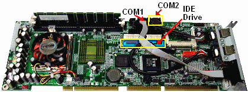
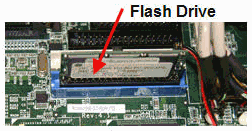
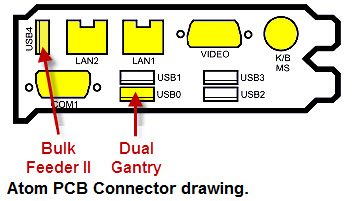
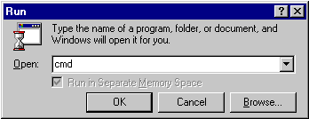
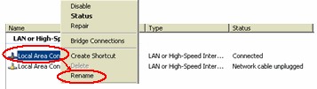
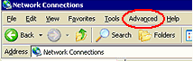
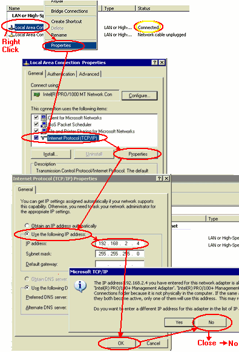

Replacing the Windows 8 or Windows XP CPU PCB for the Analytical Unit (AU)
This procedure describes how to replace the CPU PCB on the analytical unit of a DxI instrument.
Atom CPU PCB
Note: If you are replacing an older CPU PCB with an Atom CPU PCB for upgrading a DxI system to Windows 8, then replace the old AU hard drive and Console PC containing the Windows 8 image.
The Atom CPU PCB is
compatible with new AU hard drive with Windows 8 image. AU hard drive with Windows XP image is
not compatible with Windows 8 Console PC. Refer to
Mod 11825 DxI SW Version 5.3.1 Install document for more information.
Note: If you are replacing an older CPU PCB with an Atom CPU PCB, then replace the hard drive on the AU with a drive containing the latest Windows XP image.
The Atom CPU PCB
requires a latest AU hard drive with Windows XP image. It will blue screen if using the old image. The new image starts with drive lot 324814 on February 8, 2013. Lot number and date labels are on the drive.
Rocky CPU PCB

Note:
Rocky CPU PCB is
only compatible with AU Hard Drive with Windows XP image.
PCB is
obsolete and no longer available. Replace the PCB with the Atom CPU PCB and the latest AU hard drive with Windows XP image.
The red stripes on the serial ribbon cables face upward.
Connect the flash drive directly into the blue IDE drive connector.
Caution:
It is highly recommended to install the AU hard drive to the CPU PCB to properly before powering up. The hard drive is keyed but it is very easy to install the drive backwards or 1 pin off. Doing so will cause the hard drive power cable to short and the cable will likely burn and need to be replaced. The CPU and hard drive are not typically damaged if this happens.
Figure 141: Flash drive mounting

Install the new CPU PCB into the card cage (one screw).
Connect the cables to the right end of the CPU PCB.
Video cable
Keyboard / Mouse cable
COM1 serial cable
Network cables to LAN1 and 2
USB cable to port 0 (integrated instruments only)
USB cable to port 4 (Bulk Feeder II instruments only)
Figure 142: Atom PCB connectors

Note:
The cable with the ferrite bead from the AU network hub connects to LAN 1 in the Atom CPU PCB.
A keyboard / mouse cable is provided with the CPU PCB. If the cable is lost, connect the keyboard to the CPU keyboard / mouse port. If needed, the mouse from the console PC can connect to a CPU USB port.
Verify communication between the console PC and the instrument.
Press
Windows key, open the
Command Prompt icon or type
command prompt and open the program.
In the
CMD window, enter
ping 192.168.2.4, and then press
Enter key.
Verify that the console PC receives a reply from the AU.
Note:
If a Destination Host Unreachable message is displayed, then check that the IP address was entered correctly.
For Windows 8 consoles not connected to a working network, an error message of Destination Host Unreachable is generated when pinging any address (even the address of the PC).
If the AU and PC are given the same IP address, then there is a network conflict and no communication occurs. To resolve the conflict, change the PC IP address to 2.1, reboot the instrument and the PC, and then ping addresses 1 to 10 again. Refer to the configuring network settings section of the
Peripherals: Replacing Console PC or PC Hard Drive procedure.
Note: When rebooting the Privacy & Security compliant Windows 8 or Windows 10 PC, you must enter security password "Access2Admin" when prompted to launch Windows.
The network connection on the PC is located between the USB 3.0 connections and the Video connection. The dual NIC ports on the PC are for the RMS and LAS and do not work for the AU connection. Refer to
Console PC Connector Identification (DxI and Access2) document for the PC diagram.
The DxI instrument has two network connectors, identified as PC and UCTA. If unsure of the port, try both, connect to the spare port on the underside of the SPU, or connect directly to the AU hub.
Remote desktop sharing to the AU side.
Press the
Windows key, type
remote, and open the Remote Desktop Connection program.
The remote desktop connects to the instrument computer and allows remote control of the instrument and applications. When connected, the Remote Desktop window displays the Windows 8 desktop of the instrument.
Type in
192.168.2.4 into the Computer field and select Connect.
Enter
user for User Name and
tech for the password if prompted.
If prompted at the RDS warning screen, check the box for "Don't ask me again for connections to this computer" and select
Yes.
Note: For Windows 8, the default console IP address is 192.168.2.3 and the AU IP address is 192.168.2.4. Neither IP address changes during the software load process.
Check the IP address of the AU.
Note: Windows can give network port assignments to the replacement CPU PCB that are different than the original PCB.
To show the network port status, press
Windows key, type
network connections, select
Settings, and click on
View Network Connections.
Note: There are only two network connections on the AU side. If connections are swapped, correctly reconnect the network cables on the CPU PCB.
Local Network Connection is the
AU connection.
Local Network Connection 2 is the
UCTA connection.
Note: An active or connected connect has a status of Connected or Limited Connectivity.
Rename the network connections if needed.
Right click on the
network connection, select
rename, and enter
Local Area Connection for the
AU connection or
Local Area Connection 2 for the
UCTA connection.
Verify the network IP addresses and settings.
Right click on
Local Area Connection, choose
Properties, select
Internet Protocol Version 4 (TCP/IPv4) and chooseProperties.
IP address is 192.168.2.4
Subnet Mask is 255.255.255.0
Right click on
Local Area Connection 2, choose
Properties, select
Internet Protocol Version 4 (TCP/IPv4) and chooseProperties.
IP address is 134.217.96.188
Subnet Mask is 255.255.255.0
Change the network IP addresses if needed.
Note: Repeat this process twice, once for each network connection.
Right click onLocal Area Connection, choose
Properties, select
Internet Protocol Version 4 (TCP/IPv4) and chooseProperties.
Enter the
AU IP address 192.168.2.4 and the Subnet Mask 255.255.255.0
Enter the
UCTA IP address 134.217.96.188 and the Subnet Mask 255.255.255.0
Note: If this is an integrated DxI, then change the Local Area Connect 2 IP address to the following:
DxI 1 IP 134.217.96.188
DxI 2 IP 134.217.96.189
DxI 3 IP 134.217.96.190
DxI 4 IP 134.217.96.191
Click
OK to save the change.
Click
Close to exit.
Note: If the instrument is part of a DxCi integrated system, then both connections have the status Connected. Temporarily disconnect the power from the AU internal network hub to identify the connection that has the 2.4 address.
If the instrument is part of a DxCi integrated system, an additional step is required to determine the DxI IP address.
To determine the correct IP addresses for a DxI that is part of a DxCi integrated system.
From the
DxC console, select the
System Setup icon.
From the
System Setup menu, select
System Configuration.
Enter beckman as the Password, and then select
Enter.
Select the
Immuno tab to find the expected DxI IP address.
If necessary, change the IP address of the second DxI network connection to match the DxC.
Rename and restart the AU computer.
On
AU Desktop, right click on
Computer and select
Properties.
On
System, select
Advanced system settingson the left side or
Change settings on the right side.
On
System Properties, select
Computer Name.
In the
Computer description box, enter serial and followed by AU (example: 600010_AU) and then select
Change.
In the
Computer name box, enter serial and followed by AU (example: 600010_AU), and select
OK.
On
You must restart your computer to apply these changes, select
OK.
On
System Properties, select
Apply.
On
You must restart your computer to apply these changes, select
Restart Now.
Verify system operation.
If a new Atom CPU PCB was installed and the hard drive on the AU was replaced, then transfer the instrument alignments file from the PC to the AU and load the software.
The red stripes on the serial ribbon cables face upward.
Connect the flash drive directly into the blue IDE drive connector.
Caution:
It is highly recommended to install the AU hard drive to the CPU PCB to properly before powering up. The hard drive is keyed but it is very easy to install the drive backwards or 1 pin off. Doing so will cause the hard drive power cable to short and the cable will likely burn and need to be replaced. The CPU and hard drive are not typically damaged if this happens.
Figure 144: Flash drive mounting
Install the new CPU PCB into the card cage (one screw).
Connect the cables to the right end of the CPU PCB.
Video cable
Keyboard / Mouse cable
COM1 serial cable
Network cables to LAN1 and 2
USB cable to port 0 (integrated instruments only)
USB cable to port 4 (Bulk Feeder II instruments only)
Figure 145: Atom PCB connectors
Note:
The cable with the ferrite bead from the AU network hub connects to LAN 1 in the Atom CPU PCB.
A keyboard / mouse cable is provided with the CPU PCB. If the cable is lost, connect the keyboard to the CPU keyboard / mouse port. If needed, the mouse from the console PC can connect to a CPU USB port.
Verify communication between the console PC and the instrument.
Press
Windows key, select
Start > Run.
Enter
cmd and select
OK.

In the
CMD window, enter
ping 192.168.2.4, and then select
Enter.
Note:
The instrument IP address is normally 192.168.2.2 for a new AU, and 192.168.2.4 for an AU with DxI software installed.
The console PC IP address is normally 192.168.2.1 for a new PC and 192.168.2.3 for a PC with DxI software installed.
Try pinging 2.1 through 2.10, if not successful at 2.4. or 2.2.
Verify that the console PC receives a reply from the AU.
Note:
If a Destination Host Unreachable message is displayed, then check that the IP address was entered correctly.
For Windows XP consoles not connected to a working network, an error message of Destination Host Unreachable is generated when pinging any address (even the address of the PC).
If the AU and PC are given the same IP address, then there is a network conflict and no communication occurs. To resolve the conflict, change the PC IP address to 2.1, reboot the instrument and the PC, and then ping addresses 1 to 10 again. Refer to the configuring network settings section of the
Peripherals: Replacing Console PC or PC Hard Drive procedure.
The network connection on the PC is located between the USB 3.0 connections and the Video connection. The dual NIC ports on the PC are for the RMS and LAS and do not work for the AU connection. Refer to
Console PC Connector Identification (DxI and Access2) document for the PC diagram.
The DxI instrument has two network connectors, identified as PC and UCTA. If unsure of the port, try both, connect to the spare port on the underside of the SPU, or connect directly to the AU hub.
Check the IP address of the AU.
Note: Windows can give network port assignments to the replacement CPU PCB that are different than the original PCB.
Press
Windows key and select
Start > Program > Administrator Tools > Remote Desktop Connection to AU PC to start desktop sharing.
Note: If the remote connection fails because the AU hard drive was replaced, then
press
Windows key and select
Start > Programs > Accessories > Communications > Remote Desktop Connection.
enter
192.168.2.2 to the
Computer box and select
Connect to start desktop sharing.
To show the network port status on the AU side, select
Start > Settings > Network Connections.
For each connection, right-click on the connection and then select
Rename. Use the name Local Area Connection for the connection that has a status of Connected or Limited Connectivity. Use the name Local Area Connection 2 for the other connection.

Note:
Use this naming convention when only the console PC network cable is connected to the AU. The console PC must be powered on and connected to the AU to see the connection status.
If there is a pop-up warning of another adapter connection with the same name, then confirm the change.
Rename and restart the AU computer.

Select
Advanced > Network Identification.
From the
Computer Name tab, select
Change.
For the computer name, enter the instrument serial number followed by AU (example: 600010_AU).
Select
OK to change the name of the computer.
Select
Yes to select a computer name with nonstandard characters.
Select
OK to the required restart of the computer for the change to take effect.
Select
OK to close the window.
Select
No.
Note: The
Advanced menu choice is available, after you select a connection from the list.
Change the network IP addresses if needed.
Note: Repeat this process twice, once for each network connection.
From the
Network Connections window, right-click on the local area connection that has a status of Connected or Limited or No Connectivity.
Select
Properties.
From the
General tab, select
Internet Protocol (TCP/IP) > Properties.
Select
Use the following IP address.
Change IP address and the subnet mask.
For the first connection, the IP address = 192.168.2.4 and the Subnet mask = 255.255.255.0
For the second connection: IP address = 134.217.96.188 and Subnet mask = 255.255.255.0
At the TCP/IP message, select
OK > No.
At the Restart option, select
Close > No.
Note: If the instrument is part of a DxCi integrated system, then both connections have the status Connected. Temporarily disconnect the power from the AU internal network hub to identify the connection that has the 2.4 address.

If the instrument is part of a DxCi integrated system, an additional step is required to determine the DxI IP address.
To determine the correct IP address for a DxI that is part of a DxCi integrated system:
From the
DxC console, select the
System Setup icon.
From the
System Setup menu, select
System Configuration.
Enter
beckman as the Password, and then select
Enter.
Select the
Immuno tab to find the expected DxI IP address.
If necessary, change the IP address of the second DxI network connection to match the DxC.
Reboot the AU.
Verify system operation.
If a new Atom CPU PCB was installed and the hard drive on the AU was replaced, then transfer the instrument alignments file from the PC to the AU and load the software.